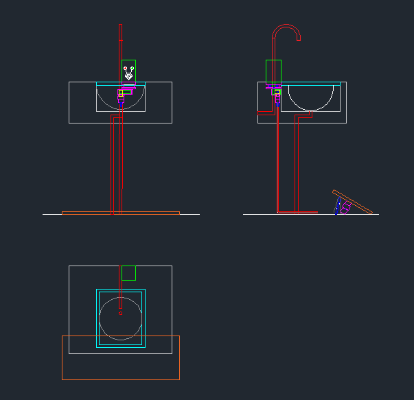

What is a maker
In fact, everyone who creates things can be considered a maker.
For example, I can paint, and I am the maker of the paper airplanes in these images.
In our current society, the maker represents a kind of identity and a kind of culture,
a kind of culture that can be cooperated. When multiple creators work together,
the power and efficiency are far greater than one person's efforts, even if that person is a genius.
Group project display
This time, I will show you two projects that we have jointly produced in the form of a four-person maker:
Project 1|The theme of the first collaborative project is to make and hack a box.
[Challenge] The title itself is a problem for us because in our cognition, a box is the name of an object, and we have never paid attention to why it is called a box. Through Internet browsing, we know that the box is a polyhedral container. After understanding what it is, we have an idea of how to hack the box in the traditional sense from a functional point of view. After a discussion period, we decided to use a box to make a pet house with other functions besides the container.
[Material] After considering the environmental protection, replaceability and accessibility factors, we set the box's material to be recyclable cardboard.
[Specifications] We have to do the most straightforward specifications in the pet house, which is suitable for small pets. However, if you want to know more size specifications, you can learn through media channels.
After voting by the members, our project plan is entirely feasible, the production materials can be easily obtained, the size of the pet house is well-known in the view, and the user can make it perfectly by simply cutting and connecting. But in terms of ergonomics, we know very little. For example, in the pet house, we did not imagine making the operation more comfortable for people with disabilities.
Project 2|The theme of the second collaborative project is to produce a prototype that can simultaneously satisfy critical production and solve social problems.
[Challenge 1] The first thing we need to consider is the social issues which are a vast topic. Eventually, when the team members expanded their ideas, they stumbled upon a short video. After discussion, we determined that this is indeed feasible as our project.
Here is the Youtube Link, and it describes the discrimination problem we want to solve.
[Challenge 2] Now that the design goals have been determined, we have to start thinking about how to solve the problems in the video. In fact, the traditional faucet can be cracked, but we are living in a particular pandemic period. The consensus view is that contact with shared objects should be minimized. In addition, the more important point is that the solutions we make need to be able to be displayed in three views. We conceived a lot of methods that could be realized, and after a group vote, we finally chose a faucet controlled by a footswitch.

[Challenge 3] Next, we need to face how this switch works and how the switch is deployed. Because the switch of the original equipment is inductive, if you want to create a sharp contrast, the mechanical structure may be the best choice. From the point of view of mechanical switches, my team members and I faced a more severe problem: robotic arm and pulley block force analysis are all high school content, and many knowledge points are not clearly remembered. So we chose to review and reproduce knowledge through book queries. After a whole afternoon of argumentation and modification, we worked out the final feasible plan to deal with the racial discrimination problem we chose.
However, the parameters of this design are not absolute because there is no clear definition of the size of the washbasin in the public space we consulted, and our other adjustable design of the resistance coefficient does not have enough evidence to prove it, so we need more Experiments and adjustments with many characters and environments.
Personal reflection
As a beginner who is just getting started, from a personal standpoint, what I have gained is a broader source of inspiration, popular understanding and ideas, and the feasibility and iteration of design schemes. From the perspective of group cooperation, I learned to absorb members' experiences and opinions and develop my thinking. Sometimes, some thoughts suddenly flashed "Yes! I didn't expect it" or "So people are thinking like this."
I always play the role of conception and drawing in group activities. I feel that pencil drawing and AutoCAD drawing are necessary skills for designers, and this activity is also an opportunity for practice. I hope to draw standard specifications and easy-to-understand drawings in the future to make my point of view more intuitive.
And I faced a challenge in these two activities, that is, the sharing of design ideas, due to the tight time and the further progress of everyone's work. All the steps leading to a successful presentation are carried out simultaneously so that the person who performed the previous actions can trace the operation of the rationalization process back through the final result. This situation is rare in design practice, so we should plan future project designs because we often underestimate the actual workload because of the description of the project.